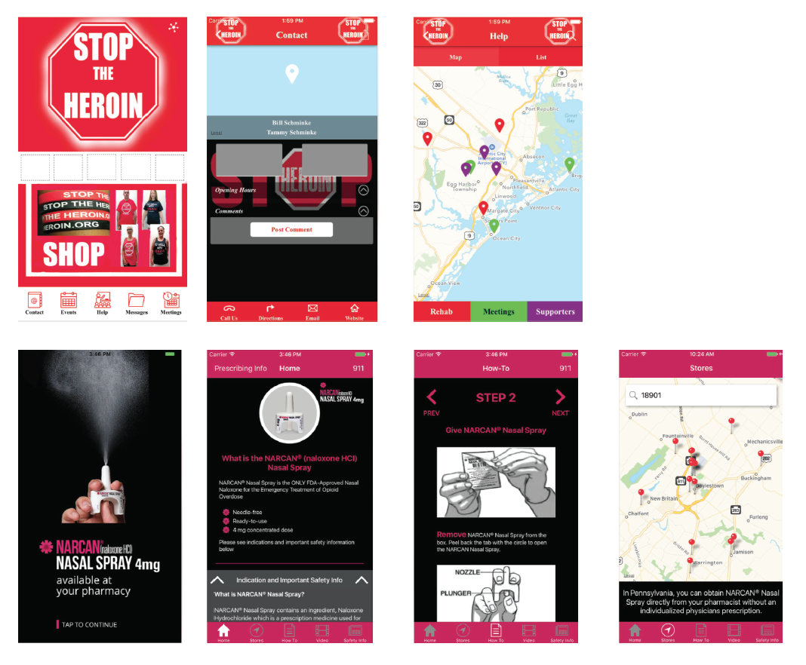

Interaction Design
Recovery
A mobile application that provides a resource for those affected by the opiod crisis
Case Study
An estimated 2.1 million people in the United States suffering from substance use disorders related to prescription opioid pain relievers in 2012 and an estimated 467,000 addicted to heroin. The number of unintentional overdose deaths from prescription pain relievers has soared in the United States, more than quadrupling since 1999.
Opioid Prescriptions Dispensed by US Retail Pharmacies
Data from https://www.drugabuse.gov/
Factors that lead to switching from prescription opioids to heroin abuse:
- Chemical tolerance toward prescribed opioids
- Increasing difficulty in obtaining these medications illegally
- Cheaper and in some communities easier to obtain than prescription opioids
Creating more effective means for preventing overdose deaths
The opioid overdose antidote naloxone has reversed more than 10,000 overdose cases between 1996 and 2010. FDA has recently approved a new hand-held auto-injector of naloxone to reverse opioid overdose that is specifically designed to be given by family members or caregivers.
Problems with Accessibility
The US federal and state governments are taking insufficient action to ensure access to the life-saving medication naloxone to reverse opioid overdose.Naloxone is only effective if someone who witnesses the overdose administers it or immediately calls emergency services.Numerous obstacles to accessing naloxone, including the absence of “good Samaritan” laws; laws barring or limiting syringe exchange and harm reduction programs that offer naloxone; and high prices for the medication.
Project Proposal
Help those struggling or know someone with a subtstance abuse problems make a positive change in their lives. Provide a resource to build a solid support system for those impacted by opiate addiction and empower them to take back control of their life.I will achieve this by including these features in my application:
- Signs and symptoms of an opiod overdose
- Instructs the user how to administer naxolone or any of its counterparts
- Information on good samiratan laws in users state
- Access to closest location to obtain naxolone
- Locations for rehab centers, emergency services, and addiction meetings
Final outcome
Process
Research on similar existing applications
Sketches and Notes